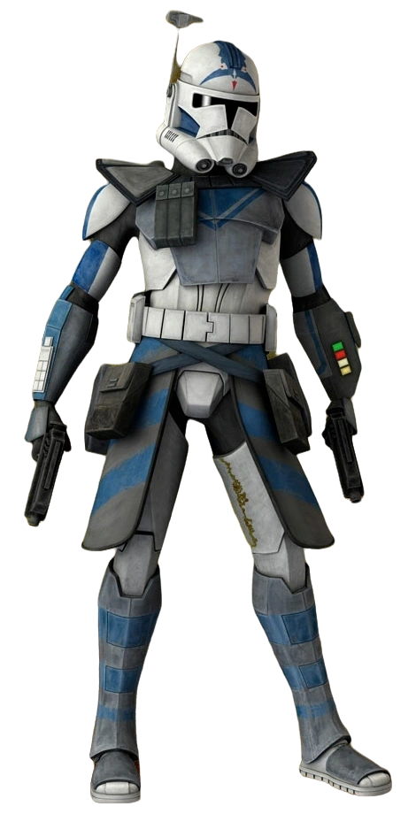
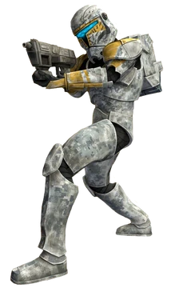
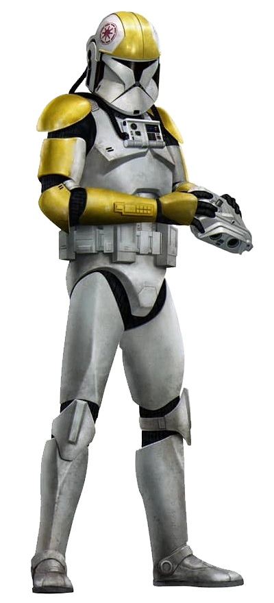
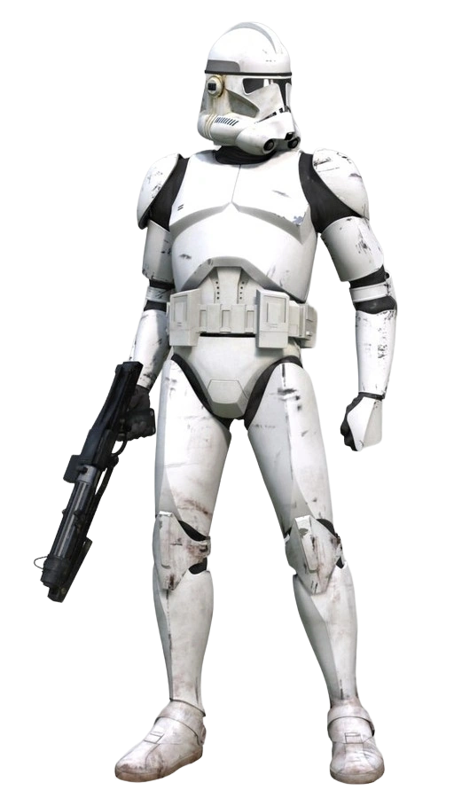
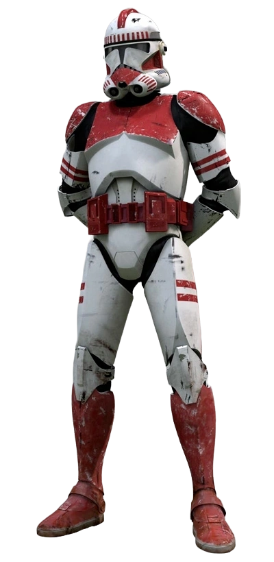
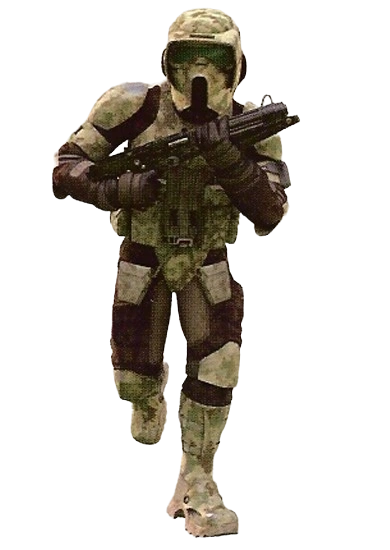
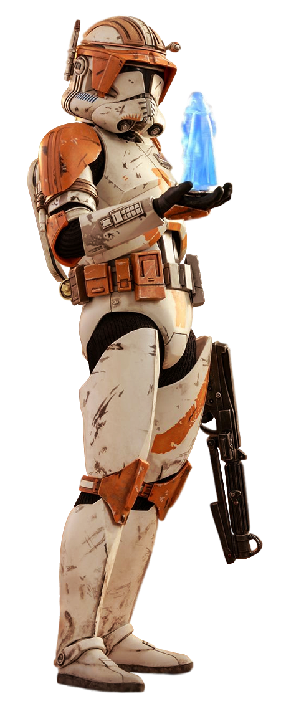

ARC TROOPERS: (Comandos de Reconocimiento Avanzado): Soldados de élite entrenados personalmente por Jango Fett o Alpha-class, con mayor libertad táctica.

COMANDOS CLON: Fuersas especiales que operan en escuadrones pequeños para misiones de sabotaje e infiltracion.


PILOTOS CLON: Entrenados especificamente para manejar naves



SOLDADOS ESPECIALISTAS: Incluyen artilleros, pilotos, soldados exploradores, paracaidistas y especialistas en entornos frios o acuaticos

COMANDANTE CLON DE ELITE: Son el rango mas alto de los clones, lider de una legion entera de clones y mano derecha de genrales